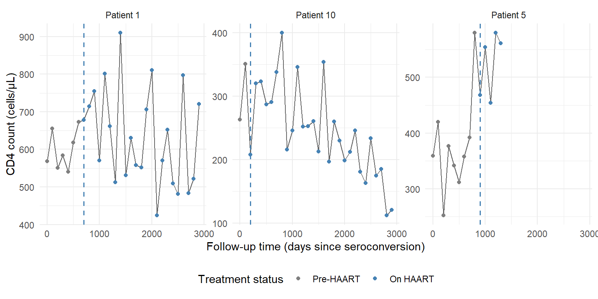
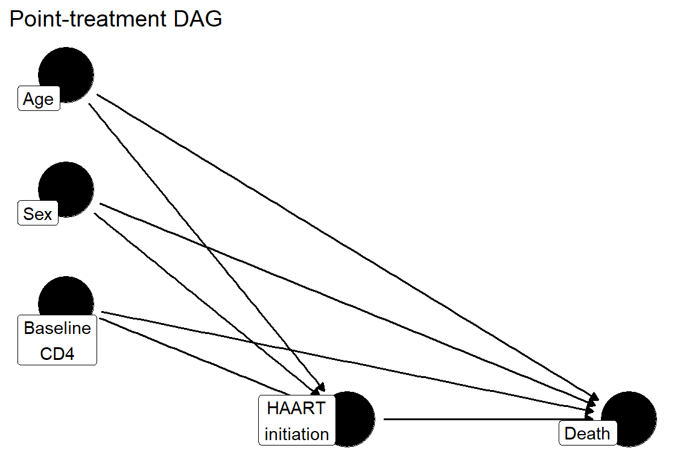
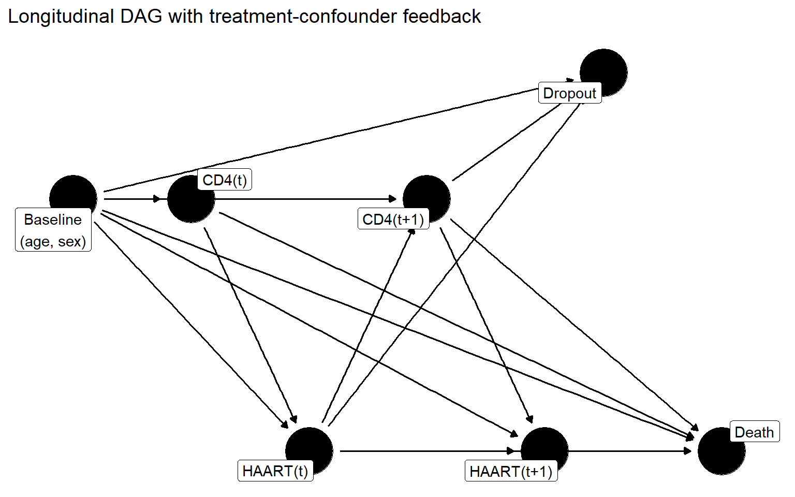

Show code
library(ipw)
library(tidyverse)
data(haartdat)Estimated reading time: 20 minutes
Throughout this handbook, we use a single recurring example to illustrate causal concepts, estimation methods, and diagnostic tools: a longitudinal HIV antiretroviral therapy cohort from the marginal structural model literature (Van der Wal & Geskus, 2011). Using one example across all chapters lets you see how the same data look through the lens of each method and makes it easier to compare approaches.
In the early years of combination antiretroviral therapy (HAART), a central clinical question was: does initiating HAART reduce mortality among HIV-positive patients, and if so, by how much?
Answering this from observational data is harder than it looks. Physicians do not assign HAART randomly. They initiate therapy when CD4 cell counts decline and clinical status worsens. The very biomarkers that predict death also determine who gets treated and when. This is confounding by indication.
The problem runs deeper than baseline confounding. HAART, once initiated, improves CD4 counts. A patient’s CD4 level at any given visit therefore reflects both their underlying disease trajectory and the effects of prior treatment. CD4 count is simultaneously a confounder of future treatment decisions and a mediator of past treatment effects. This treatment-confounder feedback is the defining feature of the dataset and the reason it motivates the longitudinal g-methods developed in later chapters.
The dataset we use is a simulated cohort of 1,200 HIV-positive patients designed to reflect the structure of real HIV cohort studies. Because the data-generating process is known, we can compare estimation methods and understand exactly where simpler approaches fail.
This cohort illustrates three complications that motivate modern causal inference. First, confounding by indication: sicker patients are more likely to start HAART, so a naive comparison of treated and untreated patients conflates the drug’s benefit with baseline severity. Second, time-varying confounding with treatment-confounder feedback: CD4 count changes over time, is affected by prior treatment, and also drives future treatment decisions. No standard regression can simultaneously adjust for CD4 as a confounder and preserve its role as a mediator. Third, the analysis requires a clearly specified target trial and estimand before any model is fit, because vague causal questions produce vague answers.
The dataset is distributed as haartdat in the ipw R package. It contains 1,200 simulated HIV-positive patients observed from HIV seroconversion in person-period (long) format, with one row per patient per 100-day interval.
library(ipw)
library(tidyverse)
data(haartdat)| Variable | Description | Role |
|---|---|---|
patient |
Patient identifier (1 to 1,200) | Unit of analysis |
tstart |
Start of time interval (days since seroconversion) | Time structure |
fuptime |
End of time interval (days since seroconversion) | Time structure |
haartind |
HAART indicator: 1 if HAART has been initiated by the end of this interval, 0 otherwise | Time-varying treatment (A) |
event |
Death indicator: 1 if patient died during this interval | Outcome (Y) |
sex |
Sex: 0 = male, 1 = female | Baseline confounder (W) |
age |
Age in years at follow-up start | Baseline confounder (W) |
cd4.sqrt |
Square root of CD4 cell count at the end of the interval | Time-varying confounder (L) |
endtime |
Patient’s final observed time (days) | Administrative variable |
dropout |
Censoring indicator: 1 if patient dropped out at interval end | Censoring (C) |
Each patient contributes between 1 and 38 rows (median approximately 15), corresponding to 100-day intervals from seroconversion through up to day 3,700. The treatment variable haartind is absorbing: once a patient initiates HAART, it stays 1 for all subsequent intervals. Among the 1,200 patients, 376 (31%) initiate HAART during follow-up. The key time-varying confounder is cd4.sqrt, measured at the start of each interval before the treatment and censoring decisions that occur at the interval’s end. This temporal ordering, CD4 measured first, then treatment and outcome, is what makes causal identification possible under the sequential exchangeability assumption.
example_ids <- c(1, 5, 10)
# Find first HAART initiation time for each patient
haart_start <- haartdat |>
filter(patient %in% example_ids, haartind == 1) |>
group_by(patient) |>
summarise(haart_time = min(fuptime), .groups = "drop")
haartdat |>
filter(patient %in% example_ids) |>
mutate(cd4 = cd4.sqrt^2) |>
ggplot(aes(x = fuptime, y = cd4)) +
geom_line(color = "grey40") +
geom_point(aes(color = factor(haartind)), size = 1.5) +
geom_vline(
data = haart_start |> mutate(cd4 = NA),
aes(xintercept = haart_time),
linetype = "dashed", color = "steelblue", linewidth = 0.7
) +
facet_wrap(~ paste("Patient", patient), scales = "free_y") +
scale_color_manual(
values = c("0" = "grey50", "1" = "steelblue"),
labels = c("Pre-HAART", "On HAART"),
name = "Treatment status"
) +
labs(
x = "Follow-up time (days since seroconversion)",
y = "CD4 count (cells/\u00B5L)"
) +
theme_minimal() +
theme(legend.position = "bottom")
The figure shows CD4 trajectories on the original (back-transformed) scale. Each patient initiates HAART at a different time, and CD4 counts fluctuate throughout follow-up. This is the longitudinal, time-varying structure that makes causal inference challenging: treatment timing depends on the evolving CD4 trajectory, and treatment itself changes the trajectory.
We also create a baseline snapshot (one row per patient) for chapters that use point-treatment examples:
haart_baseline <- haartdat |>
group_by(patient) |>
summarise(
sex = first(sex),
age = first(age),
cd4_baseline = first(cd4.sqrt)^2,
cd4_sqrt_baseline = first(cd4.sqrt),
ever_haart = max(haartind),
died = max(event),
dropout = max(dropout),
total_fup_days = max(fuptime),
.groups = "drop"
)
haart_baseline |>
summarise(
n = n(),
pct_female = mean(sex) * 100,
median_age = median(age),
median_cd4 = median(cd4_baseline),
pct_ever_haart = mean(ever_haart) * 100,
pct_died = mean(died) * 100,
pct_dropout = mean(dropout) * 100
) |>
knitr::kable(digits = 1, caption = "Baseline cohort summary")| n | pct_female | median_age | median_cd4 | pct_ever_haart | pct_died | pct_dropout |
|---|---|---|---|---|---|---|
| 1200 | 20.8 | 33 | 511.5 | 31.3 | 2.6 | 57.5 |
The primary causal question is:
Among HIV-positive individuals under longitudinal follow-up from seroconversion, what would the risk of death have been under a strategy of initiating HAART when clinically indicated, compared with a strategy of deferring HAART?
This is a question about sustained treatment strategies, not a single-timepoint comparison of treated versus untreated patients. The causal question asks what would happen if we could assign treatment strategies to everyone, removing the influence of confounding on the treatment decision. The associational question, by contrast, compares patients who happened to initiate HAART with those who did not, and that comparison is confounded because sicker patients are more likely to start treatment.
To make the causal question precise, we specify the randomized trial we would ideally conduct. This target trial protocol serves as a design template that the observational analysis attempts to emulate.
| Component | Specification |
|---|---|
| Eligibility | HIV-positive adults at seroconversion, antiretroviral-naive |
| Time zero | Date of HIV seroconversion |
| Treatment strategies | (1) Initiate HAART according to clinical guidelines vs. (2) defer HAART |
| Assignment | Random assignment at time zero |
| Outcome | All-cause mortality |
| Follow-up | From seroconversion until death, dropout, or administrative end of study (up to 3,700 days) |
| Causal contrast | Risk difference in mortality at a specified time horizon |
| Analysis | Intention-to-treat or per-protocol, depending on the question |
The target trial forces us to define the causal question before choosing a statistical method. It makes the assumptions transparent: we are asking what would have happened under specific, well-defined treatment strategies. And it highlights where the observational data fall short of the ideal, since treatment is not randomly assigned but determined by evolving clinical status. The causal roadmap (Chapter 1.2) provides the framework for bridging from this ideal trial to the data we actually have.
For the early chapters (g-computation, IPTW, TMLE), we work with a point-treatment simplification where treatment is “ever initiated HAART” and confounders are measured at baseline:
library(dagitty)
library(ggdag)
simple_dag <- dagify(
A ~ W_age + W_sex + W_cd4,
Y ~ A + W_age + W_sex + W_cd4,
exposure = "A",
outcome = "Y",
coords = list(
x = c(W_age = 0, W_sex = 0, W_cd4 = 0, A = 1, Y = 2),
y = c(W_age = 1.5, W_sex = 1, W_cd4 = 0.5, A = 0, Y = 0)
),
labels = c(
W_age = "Age", W_sex = "Sex", W_cd4 = "Baseline\nCD4",
A = "HAART\ninitiation", Y = "Death"
)
)
ggdag(simple_dag, text = FALSE, use_labels = "label") +
theme_dag() +
labs(title = "Point-treatment DAG")
Under the assumptions of consistency, exchangeability (conditional on baseline confounders), and positivity, the causal effect of HAART initiation on mortality is identified by the g-computation formula.
The real complexity becomes apparent in the longitudinal structure. The following DAG shows two time slices and illustrates the treatment-confounder feedback loop:
long_dag <- dagify(
L1 ~ W,
A1 ~ L1 + W,
L2 ~ A1 + L1 + W,
A2 ~ L2 + A1 + W,
Y ~ A2 + A1 + L2 + L1 + W,
C ~ L2 + A1 + W,
exposure = "A1",
outcome = "Y",
coords = list(
x = c(W = 0, L1 = 1, A1 = 2, L2 = 3, A2 = 4, Y = 5.5, C = 4.5),
y = c(W = 1, L1 = 1, A1 = 0, L2 = 1, A2 = 0, Y = 0, C = 1.5)
),
labels = c(
W = "Baseline\n(age, sex)",
L1 = "CD4(t)",
A1 = "HAART(t)",
L2 = "CD4(t+1)",
A2 = "HAART(t+1)",
Y = "Death",
C = "Dropout"
)
)
ggdag(long_dag, text = FALSE, use_labels = "label") +
theme_dag() +
labs(title = "Longitudinal DAG with treatment-confounder feedback")
The arrow from HAART(t) to CD4(t+1) represents the effect of treatment on the confounder. The arrow from CD4(t+1) to HAART(t+1) represents the confounder influencing future treatment. This is treatment-confounder feedback: CD4 is simultaneously a confounder of future treatment and a consequence of past treatment. Dropout may depend on CD4 levels and prior treatment, creating the potential for informative censoring.
This feedback structure is why later chapters need longitudinal g-methods. No single regression model can simultaneously adjust for CD4 as a confounder and preserve its role as a mediator of treatment effects.
The person-period structure of haartdat maps directly onto this longitudinal DAG. Each row corresponds to one time slice. Within each interval, the temporal ordering is: CD4 is measured (beginning of interval), then the treatment decision and outcome/censoring occur (end of interval). The variables map as follows: cd4.sqrt is \(L_t\), haartind is \(A_t\), event is \(Y\), dropout is \(C\), and age and sex are the baseline covariates \(W\).
The treatment-confounder feedback structure in this cohort means that naive regression approaches, whether they ignore time-varying CD4 or adjust for it, can produce misleading estimates of the HAART effect. A crude comparison of treated and untreated patients is confounded by indication (sicker patients start HAART). Adjusting for baseline covariates alone ignores that CD4 changes over time. And adjusting for time-varying CD4 in a pooled regression blocks part of the treatment’s beneficial pathway. Chapter 1.1 explains these failure modes in detail and motivates the g-methods (g-computation, IPTW, TMLE) that the rest of the handbook develops.